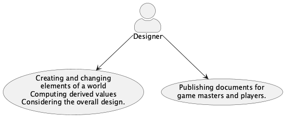
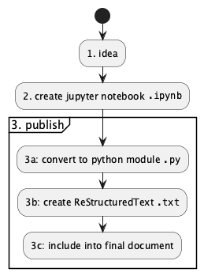

Using the OpenD6 Tools¶
In this section, we’ll talk about the following two use cases for these tools:
Creating and validating elements of a world, campaign, or encounter – characters, spells, creatures, etc.
Publishing documents for game masters and players.

Generally, the creation-change-compute-consider is a repeating cycle of activity that precedes publication. We’ll start with using these tools to create elements and compute derived values.
Note
The examples use “docstring” examples.
The code is prefaced with >>> as if you were typing it interactively to the Python interpreter.
This is not practical, but it’s how examples are shown (and validated) in Python documentation.
Pragmatically, you’ll be creating cells in a Jupyter Notebook or writing text in a .py module file with a programming text editor.
Creation¶
These tools offer a language specific to the OpenD6 TTRPG domain. (We call it a “DSL”, Domain-Specific Language.)
There are two sub-categories of language with the OpenD6 domain: Spells and Characters. They’re similar in some respects, but generally have very little actual overlap.
Spells¶
The DSL uses Python to do computations and transformations on a Spell definition. This also includes invocations and magical items.
Here’s an example.
>>> from opend6_tools.magic2 import *
>>> example = Spell(
... name="Example",
... notes="Mage waves their hands and says the words",
... skill="Transformation",
... effect=SkillEffect("Acumen: testing", "+4D", "skill modifier"),
... duration=DurationAspect("1 sec"),
... range=RangeAspect("1m"),
... casting_time=CastingTimeAspect("5 sec"),
... speed=SpeedAspect.based_on("range", description="Instantaneous"),
... other_aspects = {
... "gestures": GesturesAspect("waves hands", "simple"),
... "incantations": IncantationsAspect("says the words", "short"),
... },
... other_conditions = [GenericAspect(1, "Everthing else is completed")],
... )
>>> example.difficulty
5
(Yes, there’s a wee bit of redundancy here. It’s actually helpful because it helps to pinpoint errors.)
The OpenD6 Rules list 8 characteristics of a spell. There are some minor discrepancies.
Difficulty. This is not provided in the
Spellcode block. It’s computed. Theexample.difficultyreveals the computed difficulty.Name, notes, and other conditions were added to the
Spelldefinition.
There are a lot of distinct classes of Effect.
See Implementation for the complete reference.
Here’s the short list of effects, with examples.
DamageEffect("Body damage", "+4D+1")ProtectionEffect("Damage Resistance", "+4D+1", "physical damage", "ignore all armor")SkillEffect("Physique: lifting", "+5D")AttributeEffect("Physique", "+5D", "attribute modifier")SpecialAbilityEffect("Extra Sense: Bugs", 3)DisadvantageEffect("Hindrance: Initiative", 5, "-10 to all initiative totals")TimeEffect("Reduces duration", "10 min")DistanceEffect("Moves something", "1 km")MassEffect("Moves", "100 kilograms")VolumeEffect("Creates", "100 liters")
Similarly, there are a large number of potential Aspect values that can be included in the other_aspects dictionary.
Here are the required aspects:
DurationAspect("1 min")RangeAspect("15 m")SpeedAspect.based_on("range", description="Instantaneous")CastingTimeAspect("1 r")
Note that Speed is almost always based on range.
Rather than state the range twice (once as range, and once as speed, it’s easier to use this based_on() construct.
Here are the “other” aspects:
AreaEffectAspect("2.5 m circle; 3m l 1m r cone")ChangeTargetAspect("2 targets")ChargesAspect(10)CommunityAspect("31 helpers", "Simple actions")ComponentsAspect("something", "uncommon; destroyed")ConcentrationAspect.based_on("casting_time")FeedbackAspect(3)FocusedAspect.based_on(("effect", "duration"))GesturesAspect("waves hands", "simple; offensive")IncantationsAspect("Die, scum", 'phrase; loud; offensive')MultipleTargetAspect("3 targets")UnrealEffectAspect.based_on("effect", "difficulty 9")VariableDurationAspect("on/off switch")VariableEffectAspect("Can increase", 10)VariableMovementAspect("bend around same size")ArcaneKnowledgeAspect(description="dimension, time", difficulty=0)GenericAspect(2, "Not too hard")
Computations.
The difficulty appears to be an attribute of a
Spellobject. It’s not actually static, it’s a dynamic property, computed as needed.The
opend6_tools.magic2.debug()function. This is handy in a Notebook to see details of the spell and the difficulty computation.The
opend6_tools.magic2.detail()function. This is used by themagic2application to transform spell definitions into RST for use by Sphinx.
Characters¶
The language uses Python to do computations and transformations on a Character definition. This also includes Creatures.
Here’s an example.
>>> from opend6_tools.character import *
>>> henchman = Character(
... occupation="Henchman",
... race="Human",
... agility=Agility(
... 2*D,
... {"fighting": 4*D, "melee combat": 3*D, "stealth": 3*D}),
... coordination=Coordination(
... 2 * D,
... {"lockpicking": 3*D, "marksmanship": 4*D}),
... physique=Physique(
... 3 * D, {"running": 3*D+2}),
... intellect=Intellect(
... 2 * D,
... ),
... acumen=Acumen(
... 2 * D,
... {"hide": 3*D, "streetwise": 3*D, "tracking": 3*D},
... ),
... charisma=Charisma(2 * D),
... move=10,
... fate_points=0,
... character_points=2,
... body=13,
... equipment="dagger (damage +1D), lockpicking tools (+1D to lockpicking rolls), soft leather armor (Armor Value +2)",
... )
>>> henchman.budget_check(CharacterBudget.NORMAL)
{'Attributes': '13D out of 18D', 'Skills': '29D+2 out of 7D', 'Options': 'Nothing'}
(Yes, there’s a wee bit of redundancy here. It’s actually helpful because it helps to pinpoint errors.)
The budget_check() method recapitulates the character’s budget for base attributes and specific skills.
See Implementation for the complete reference.
The basis for comparison is the starting budget for typical characters.
There are only a few essential Attributes.
AcumenCharismaIntellectAgilityCoordinationPhysiqueMagicMiracles
Each of these is identical in structure: Attribute(dice_code, {'skill': dice_code, ...}).
The dice_code is a small shift in syntax from something like 2D+2 to 2*D+2. The skill names are those defined in the rules.
Here are a large number of advantages, disadvantages, and special abilities. Here are the Advantages.
AuthorityContactsCulturesEquipmentFamePatronSizeTrademarkSpecializationWealth
Each of these has a rank, and any additional notes.
For example, Fame(2, "famous divorce settlement").
Here are the Disadvantages:
AchillesHeelAdvantageFlawMinorStigmaAgeBadLuckBurnOutCulturalUnfamiliarityDebtDevotionEmployedEnemyHindranceInfamyLanguageProblemsLearningProblemsPovertyPrejudicePriceQuirkReducedAttribute
Each of these has a rank, and any additional notes.
For example, Quirk(2, "Exaggerated gestures").
Here are the Special Abilities. Each of these has a distinct cost for each rank.
AcceleratedHealing, 3Ambidextrous, 2AnimalControl, 3ArmorDefeatingAttack, 2AtmosphericTolerance, 2AttackResistance, 2AttributeScramble, 4Blur, 3CombatSense, 3Confusion, 4Darkness, 3Elasticity, 1Endurance, 1EnhancedSense, 3EnvironmentalResistance, 1ExtraBodyPart, 0ExtraSense, 1FastReactions, 3Fear, 2Flight, 6GliderWings, 3Hardiness, 1Hypermovement, 1Immortality, 7Immunity, 1IncreasedAttribute, 2InfravisionUltravision, 1Intangibility, 5Invisibility, 3IronWill, 2LifeDrain, 5Longevity, 3LuckGood, 2LuckGreat, 3MasterOfDisguise, 3MultipleAbilities, 1NaturalArmor, 3NaturalHandWeapon, 2NaturalMagick, 5NaturalRangedWeapon, 3Omnivorous, 2ParalyzingTouch, 4PossessionLimited, 8PossessionFull, 10QuickStudy, 3SenseOfDirection, 2Shapeshifting, 3Silence, 3SkillBonus, 1SkillMinimum, 4Teleportation, 3Transmutation, 5UncannyAptitude, 3Ventriloquism, 3WaterBreathing, 2YouthfulAppearance, 1
These also, have a numeric rank value and notes. The cost, however, is a product of the desired rank and the rank cost for the given special ability.
We can use these Python class defintions as a DSL to write Spell, Invocation, Character, Creature, and Item descriptions. We can look at the dice budgets, make changes, and fine-tune the design. Because the DSL is tied to the rules, the resulting elements of a world, campaign, or encounter tend to be consistent.
We can now turn to publishing these elements.
Publication¶
Publication works with Sphinx. (Alternatives, like Hugo, work nicely because this too also uses ReStructured Text.)
There is a multi-step transformation from idea to document.

Here is a more detailed view of the various documents involved.
![@startuml
'https://plantuml.com/component-diagram
skinparam actorStyle awesome
actor Designer
component "Jupyter Lab" as jupyter <<app>>
component Make <<app>>
boundary Browser
boundary Terminal
package book_source {
artifact "element.ipynb" as nb
artifact "element.py" as mod <<app>>
artifact "element.txt" as doc
artifact "document.rst" as book
/'
note "created by the designer" as note_1
note_1 ..> nb
note_1 ..> book
note "final output" as note_2
note_2 ..> web_page
'/
}
package book_build {
artifact "document.html" as web_page
}
package opend6_tools {
component "notebook_extract" as converter <<app>>
component magic2
component character
}
nb ..> magic2
mod ..> magic2
Designer --> Browser : "2. Create Notebook"
Designer --> Terminal : "3. Publish"
Browser --> jupyter
jupyter --> nb
Terminal --> [Make]
[Make] --> converter : "3a. convert notebook"
converter <-- nb : "reads"
converter --> mod : "writes"
[Make] --> mod : "3b. create RST"
mod --> doc : "writes"
component "sphinx-build" as sphinx <<app>>
[Make] --> sphinx : "3c. include in final document"
sphinx <-- book : "reads"
sphinx <-- doc : "reads"
sphinx --> web_page : "writes"
@enduml](_images/plantuml-e701962dcab38052e0e5824b1bf9fde613a18254.png)
This shows a number of transformations.
The
notebook_extractapp converts from.ipynbto.py. The notebook, which has few rules or boundaries is converted to an application module with a command-line interface. For a “spells” conversion, only theSpellandInvocationcells are preserved. For a “characters” conversion, theCharacterandCreaturecells are preserved.The application module creates an RST-format file. This often has a suffix of
.txtto distinguish it from the manually-created RST files. The module can also produce debugging output as well as the RST for publication.The Sphinx tool converts the collection of
.rstfiles to the final publication form. This includes HTML, PDF, and EPUB.
This also shows two distinct interfaces to these tools:
An interactive Jupyter Lab session (in a browser) to create (and update) a notebook.
A terminal window to run the
makecommand to create the final HTML web page (or PDF or EPUB). This can also be run via the browser from within the Jupyter Lab environment.
There are other apps (including opend6_tools.notebook_extract and the module created from a notebook), but these are not often used directly by a designer.
The notebook as a starting place is convenient, but not required. A skilled Python developer can comfortably build a module directly. The module’s CLI can display debugging information allowing a designer to change a module and compute the difficulties (or character budgets) entirely using command-line tools.
Files and structure¶
The designer must be cognizant of the files they will create and the transformations that will happen.
The designer creates book content in RST-formatted files. This is used to produce the final book as HTML, PDF, or EPUB. This uses
.. include::commands to include the.txtfiles created from the spell modules or character modules.A
.pymodule is the preferred format for the DSL. A small CLI application will emit RST-format files for use by Sphinx.The designer can create an
.ipynbnotebook, which is slightly easier than working directly with a module. Often notebooks are kept separate from the Sphinx content.
The relationships among these files leads to several individual Makefile instances to control publication.
These rules are not complicated, and are helpful to optimize the workflow.
Here’s how a spell’s RST might be included into a document.
Here's the **Quality Assurance** spell.
.. include:: spells/qa.rst
Maybe some more description of this spell.
An **example** can be helpful.
This presumes there will be a qa.rst file created from the qa.py module.
Here’s the Makefile line that makes this happen.
%.txt : %.py
python $< display > $@
This will display the spells in the module file, and writing the output to STDOUT. This is redirected to the qa.rst file, replacing the previous content.
The module has a debug command, also.
python $< debug 'Quality Assurance'
This will display details of the spell with the name given. The name uses shell name matching rules, so``’*’`` will display all cells.